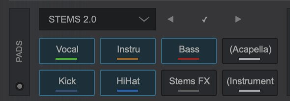

⚠️ עמוד Hotcues לא צולם בסריקה. אצלך מוצג עמוד STEMS 2.0; עבור עמוד בחצים כדי לראות Hotcues.
Hot Cue היא נקודה שמורה בשיר שאפשר לקפוץ אליה מיד, גם כשהשיר מתנגן. בניגוד ל-Cue הרגיל (אחד), אפשר לשמור כמה Hot Cues בכל שיר, למשל: 1 = התחלה, 2 = פזמון, 3 = ברייק, 4 = סוף.
איפה הם?
ב-VirtualDJ ה-Hot Cues נמצאים בPads שמתחת לכל דק, בעמוד (Page) של Hotcues. לחיצה על Pad ריק שומרת נקודה במקום הנוכחי, ולחיצה על Pad מלא קופצת אליה. הנקודות נשמרות עם השיר, כך שבפעם הבאה שתטען אותו הן יחכו לך.
מקלדת
לפי המדריך הרשמי: Alt+A, S, D, F, Z, X, C, V מפעילים את Pads 1-8 בדק השמאלי, ו-Alt+G מחליף עמוד Pads. בדק הימני: Alt+J, K, L, ; וכו'.
שימושים
- קפיצה מהירה לפזמון כדי לבדוק את השיר באוזניות.
- להתחיל שיר מאמצע (למשל ישר מהדרופ).
- "תיפוף" על Hot Cues לאפקט יצירתי.
💡 הכן Hot Cues לשירים החשובים שלך מראש בבית, לא באמצע אירוע.